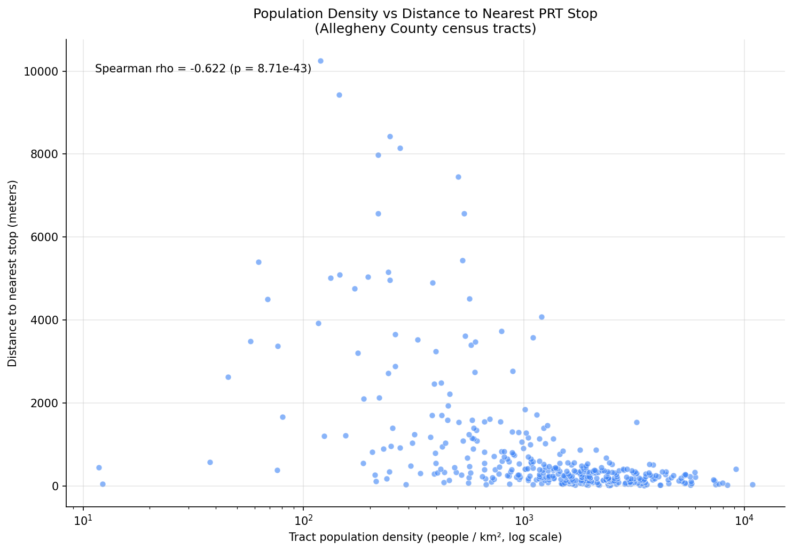
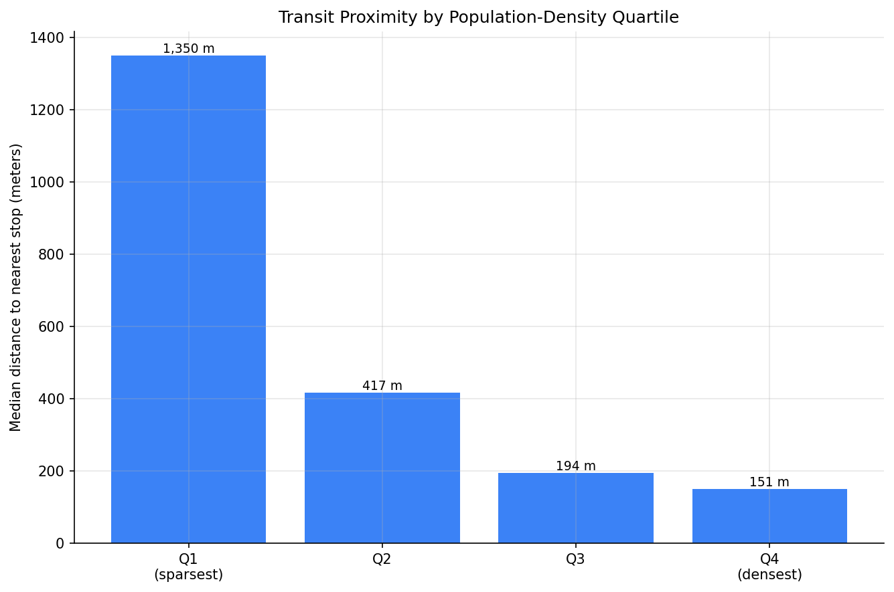

Analysis
46 - Population Transit Proximity
Coverage: Coverage window unavailable for this page.
Built 2026-06-05 17:09 UTC · Commit 5dead49
Page Navigation
Analysis Navigation
Data Provenance
flowchart LR
46_population_transit_proximity(["46 - Population Transit Proximity"])
t_stops[("stops")] --> 46_population_transit_proximity
01_data_ingestion[["Data Ingestion"]] --> t_stops
u1_01_data_ingestion[/"data/routes_by_month.csv"/] --> 01_data_ingestion
u2_01_data_ingestion[/"data/PRT_Current_Routes_Full_System_de0e48fcbed24ebc8b0d933e47b56682.csv"/] --> 01_data_ingestion
u3_01_data_ingestion[/"data/Transit_stops_(current)_by_route_e040ee029227468ebf9d217402a82fa9.csv"/] --> 01_data_ingestion
u4_01_data_ingestion[/"data/PRT_Stop_Reference_Lookup_Table.csv"/] --> 01_data_ingestion
u5_01_data_ingestion[/"data/average-ridership/12bb84ed-397e-435c-8d1b-8ce543108698.csv"/] --> 01_data_ingestion
t_census_tracts[("census_tracts")] --> 46_population_transit_proximity
d1_46_population_transit_proximity(("geopandas (lib)")) --> 46_population_transit_proximity
d2_46_population_transit_proximity(("polars (lib)")) --> 46_population_transit_proximity
d3_46_population_transit_proximity(("scipy (lib)")) --> 46_population_transit_proximity
classDef page fill:#dbeafe,stroke:#1d4ed8,color:#1e3a8a,stroke-width:2px;
classDef table fill:#ecfeff,stroke:#0e7490,color:#164e63;
classDef dep fill:#fff7ed,stroke:#c2410c,color:#7c2d12,stroke-dasharray: 4 2;
classDef file fill:#eef2ff,stroke:#6366f1,color:#3730a3;
classDef api fill:#f0fdf4,stroke:#16a34a,color:#14532d;
classDef pipeline fill:#f5f3ff,stroke:#7c3aed,color:#4c1d95;
class 46_population_transit_proximity page;
class t_census_tracts,t_stops table;
class d1_46_population_transit_proximity,d2_46_population_transit_proximity,d3_46_population_transit_proximity dep;
class u1_01_data_ingestion,u2_01_data_ingestion,u3_01_data_ingestion,u4_01_data_ingestion,u5_01_data_ingestion file;
class 01_data_ingestion pipeline;
Findings
Findings: Population Transit Proximity
Key findings
Denser census tracts sit much closer to PRT transit. Across the 386 populated census tracts in Allegheny County, population density and distance to the nearest stop are strongly negatively correlated (Spearman ρ = −0.62, p < 0.001). The county's people-dense neighborhoods are, as a rule, its best-served.
The proximity gradient is steep and consistent. Sorting tracts into population-density quartiles, the median distance to the nearest stop falls monotonically as density rises:
| Density quartile | Median distance to nearest stop | |------------------|---------------------------------| | Q1 (sparsest) | 1,350 m (~0.84 mi) | | Q2 | 417 m | | Q3 | 194 m | | Q4 (densest) | 151 m (~0.09 mi) |
A resident of the densest quartile of tracts is typically within a two-minute walk of a stop; in the sparsest quartile the nearest stop is nearly nine times farther away.
The typical tract is well served. The median Allegheny County tract centroid is just 318 m from the nearest stop — comfortably inside a quarter-mile walk.
Coverage thins out in the lower-density tracts. 301 of 394 tracts have their centroid within 805 m (≈ ½ mile) of a stop, but those tracts hold only 67.5% of the county's population. The roughly one-third of residents beyond that threshold are concentrated in the lower-density tracts that the gradient above shows are farthest from service.
Together with Analysis 44, this answers both halves of the access question. Analysis 44 ranks which routes reach the most people; this analysis shows that proximity to transit tracks population density — PRT's network is built where the people are, and the unserved share lives in the spread-out periphery.
Limitations
- Area-level (ecological) result. The correlation describes census tracts, not individuals. It does not measure who rides transit or how far any particular resident walks.
- Straight-line distance from the tract centroid. The real walk follows the street network and is usually longer; Pittsburgh's rivers and hillsides make this gap larger than in a flat, gridded city. A centroid also misrepresents large or irregularly shaped tracts.
- Stop presence is not service quality. A nearby stop may be served only hourly. Proximity is necessary but not sufficient for useful transit access.
- Allegheny County only. Tracts in the four adjacent counties present in
the
census_tractstable are excluded, since PRT service there is sparse and would dominate the "far from transit" tail without being informative.
Validation
- Data source verified. Tract population, land area, and polygons from the
census_tractstable (prt.db), loaded viawalksheds.load_tractsand checked against theCENSUS_TRACTSschema. Stop coordinates from thestopstable. - Geographic scope matches. Both inputs are filtered to Allegheny County
(
county_fips = '003'), 394 tracts — consistent with the 2020 Census tract geography for the county. - Null/missing handling. Stops with null coordinates are excluded. The 8 tracts with zero ACS population are excluded from the density correlation and quartiles (density is undefined for them) but retained for the coverage count.
- Direction of effects checked. Density and distance are negatively correlated and the quartile gradient is monotonic — the expected direction (transit is built where people are). A positive correlation would have been a red flag.
- Surprising results investigated. None. The result is consistent with Analysis 44 and with standard transit-geography expectations; no value fell outside the plausible range.
- Small-sample note. Distances are deterministic geographic measures, not sampled estimates, so no minimum-observation threshold applies. The correlation uses all 386 populated tracts.
Output

Scatter of tract population density against distance to the nearest stop, annotated with the Spearman correlation.

Bar chart of median distance to the nearest stop by population-density quartile.
No interactive outputs declared.
Per-tract population, density, distance to nearest stop, density quartile, and within-half-mile flag.
Preview CSV
Methods
Methods: Population Transit Proximity
Question
Within Allegheny County, do more densely populated census tracts sit closer to a PRT transit stop than sparsely populated ones? This is the proximity counterpart to Analysis 44 (which ranks routes by the population they reach): here the unit of analysis is the census tract, and the question is whether the people-dense parts of the county are the best served.
Approach
- Tracts. Load Allegheny County census tracts (
county_fips = '003') from thecensus_tractstable viaprt_otp_analysis.walksheds.load_tracts, which returns polygons projected to EPSG:32617 (UTM 17N, meters). - Stops. Load every PRT stop with valid coordinates from the
stopstable and project the points to the same meter-based CRS. - Proximity. For each tract, compute the straight-line distance from the
tract polygon centroid to the nearest stop, using a nearest-neighbor
spatial join (
geopandas.sjoin_nearest). - Density. Compute population density as
population / land_area_km2(land area converted from the table'sland_area_m2). - Correlation. Test the association between tract population density and distance to the nearest stop with a Spearman rank correlation. The expected sign is negative — denser tracts closer to transit. A positive sign would be a red flag, not a finding.
- Density-quartile gradient. Split tracts into population-density quartiles and report the median distance to the nearest stop in each, to show the gradient in plain terms.
- Coverage. Classify each tract as within 805 m (≈ 1/2 mile) of a stop and report both the share of tracts and the share of county population that falls inside that walk-shed.
Data
census_tracts(prt.db) —geoid,county_fips,population,land_area_m2, tract polygon (geometry_wkt). Filtered to Allegheny County.stops(prt.db) —stop_id,lat,lon. Stops with null coordinates are excluded.
Output
output/tract_transit_proximity.csv— per tract: population, density, distance to nearest stop, density quartile, and within-805 m flag.output/density_vs_distance.png— scatter of tract population density against distance to the nearest stop, with the Spearman result annotated.output/distance_by_density_quartile.png— bar chart of median distance to the nearest stop by population-density quartile.
Caveats
- Results are area-level (ecological) associations: they describe census tracts, not individual residents or their travel behavior.
- Distance is straight-line from the tract centroid, not a network walk. Rivers, hillsides, and highways mean the real walk is often longer, and a centroid can misrepresent a large or irregularly shaped tract.
- Stop presence is not service quality: a nearby stop may be served infrequently. Proximity is a necessary, not sufficient, condition for useful transit access.
Source Code
|
Sources
| Name | Type | Why It Matters | Owner | Freshness | Caveat |
|---|---|---|---|---|---|
| stops | table | Primary analytical table used in this page's computations. | Produced by Data Ingestion. | Updated when the producing pipeline step is rerun. | Coverage depends on upstream source availability and ETL assumptions. |
Upstream sources (5)
|
|||||
| census_tracts | table | Primary analytical table used in this page's computations. | Project pipeline owner not linked. | Refresh cadence unknown. | Coverage depends on upstream source availability and ETL assumptions. |
| geopandas | dependency | Runtime dependency required for this page's pipeline or analysis code. | Open-source Python ecosystem maintainers. | Version pinned by project environment until dependency updates are applied. | Library updates may change behavior or defaults. |
| polars | dependency | Runtime dependency required for this page's pipeline or analysis code. | Open-source Python ecosystem maintainers. | Version pinned by project environment until dependency updates are applied. | Library updates may change behavior or defaults. |
| scipy | dependency | Runtime dependency required for this page's pipeline or analysis code. | Open-source Python ecosystem maintainers. | Version pinned by project environment until dependency updates are applied. | Library updates may change behavior or defaults. |